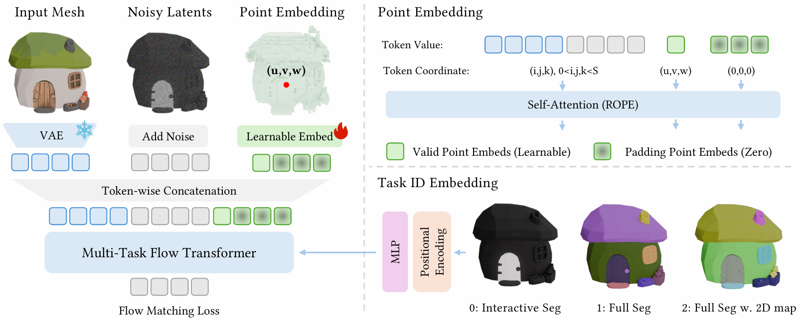

Thanks to Hao Xu for sharing the Blender source files that helped us build this demo.
LaviGen supports interactive segmentation, where users specify sparse spatial points to indicate the target region and the system isolates the corresponding part accordingly. Click on the cards to view extracted GLB files.
LaviGen supports full-parts 3D segmentation, decomposing a single 3D model into complete part-level components. Click on the cards to view extracted GLB files.
LaviGen also supports full-parts 3D segmentation conditioned on 2D segmentation maps, which provides explicit spatial priors for user-guided, more precise, and customizable part-level segmentation. Click on the cards to view extracted GLB files.

SeviGen reformulates 3D part segmentation as part-wise colorization on a structured 3D representation: instead of predicting discrete part IDs, it predicts part-indicative voxel colors that align naturally with the pretrained generative prior. Different segmentation settings are instantiated by how the colorization target is constructed. For interactive segmentation, user-provided clicks specify the target part and we use a binary colorization. For full segmentation, each part is assigned a distinct color using a randomly sampled palette, and we further use multiple random color assignments during training to prevent the model from overfitting to any specific color-part correspondence. For 2D-guided full segmentation, a rendered 2D part-color map provides explicit guidance, and the 3D colorization is generated to be consistent with the 2D assignments.
Given an input asset, we encode it into a geometry latent z that anchors generation to the underlying shape and fixes the active-voxel support; the colorization target is encoded as a color latent y, and generation proceeds by denoising from a noisy state yt conditioned on (yt, z). User interaction is injected via point embeddings: each click is encoded as a 3D coordinate token paired with a shared learnable point feature, and the resulting point embeddings are appended (with zero-padding to a fixed length) to provide a unified conditioning interface across tasks. For 2D guidance, the 2D segmentation map is encoded into guidance tokens and injected through cross-attention, enabling controllable granularity and palette behavior. Finally, a task embedding is fused with the timestep embedding to make the model explicitly task-aware under a shared parameterization.
If you find our work useful, please consider citing:
@article{li2026segvigenrepurposing3dgenerative, title={SegviGen: Repurposing 3D Generative Model for Part Segmentation}, author={Lin Li and Haoran Feng and Zehuan Huang and Haohua Chen and Wenbo Nie and Shaohua Hou and Keqing Fan and Pan Hu and Sheng Wang and Buyu Li and Lu Sheng}, year={2026}, journal = {arXiv preprint arXiv:2603.16869}, }
The website template is borrowed from TRELLIS